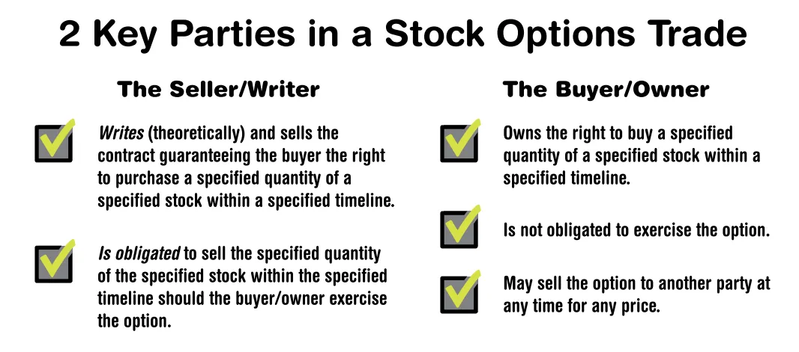

Regardless of whether the market is up or down, there are always ways to make money with wise trades. Lowrisk stock options trading strategies are both effective and profitable in an overvalued market. Making money on
undervalued stocks is straightforward—buy low and sell high.
But what about overvalued stocks?
Many investors, especially at the beginner level, are not comfortable short selling stocks that they don’t already own,
nor should they be.
WHAT IS SHORT SELLING?
Short selling requires the investor to commit to returning a certain number of shares to the market at a certain time
and for a certain price.
Traders make money on short selling by borrowing—yes, borrowing—a stock they think is overvalued.
Let’s say they borrow 100 shares of ABC stock that’s trading for $30 per share. The short seller commits to returning
these 100 shares of ABC at a specific future date. The short seller immediately liquidates the stock and pockets the
$3,000. If the stock value takes a dive during the borrowing period, then the short seller repurchases the stock at the
lower price, returns the borrowed stock, and makes a profit. But, unfortunately, things don’t always go so smoothly
UNMITIGATED RISK & LOW-RISK STOCK OPTIONS
If the stock spikes in value, the short seller is still obligated to return the borrowed shares.
Suppose the 100 shares of ABC stock (that was borrowed and immediately sold for $30 per share) is selling for $40
per share when the borrowing period expires. The short seller is now obligated to purchase back the 100 shares at
$40 and will lose $10 per share—a thousand dollars in total losses.
Short selling carries an unmitigated risk in that there’s no limit to how high a stock’s value can climb in a given period.
For this reason, many investors avoid short positions.
Fortunately, however, for conservative or beginner-level investors wanting to bet against overpriced stocks, we have
the covered call option.
USING COVERED CALLS TO MITIGATE RISK
A call option is an agreed-upon right to purchase a stock for a specific price at a specific future time. Call options are
bought and sold on the open market.
Selling a call option is commonly referred to as “writing a call option,” and it’s much less risky to write a call option
for a stock that you already own.
Let’s say we own 50 shares of Home Depot Inc (NYSE:HD) and the stock has climbed in value over the last few
months, from $125 per share to $140 per share. We feel strongly that the HD’s price is inflated. We also feel it won’t
climb much higher and will likely decrease in value.
We’d like to profit from our prediction.
To do so, we write a covered call option for the stock, giving the buyer of the option a guaranteed price of $140 per
share at the end of a specific time period. Let’s say two months. We then sell this call option at market price; perhaps
the buyer is willing to pay $2 per share ($100 for 50 shares).
In the event our prediction is correct and Home Depot Inc (HD) declines in value, then the $140 call option we wrote
will not be exercised and our profit will be $100. If the stock increases in value, then the call option will be exercised
and we’ll be obligated to sell the stock to the call option owner at $140 per share. Even if the stock is currently
trading at a higher price. They win.
Because we already owned the 50 shares of Home Depot Inc (the “underlying asset”) when we wrote the option, it is
referred to as a “covered call.” Selling the stock at $140 per share (a price we initially felt was inflated) is our worstcase scenario.
Our risk is therefore mitigated.
NAKED CALLS
Were we to write the call option without owning the underlying asset—known as a “naked call”—then we’d be
forced to first purchase the stock at its current market price before selling it to the call option owner for the lower
price.
Our loss potential would be infinite; therefore, naked calls are considered very risky. Naked calls should never be
included in a low-risk stock options trading strategy.

USING PUT OPTIONS TO PROFIT>
Like covered calls, put options are another path to profitability for traders with bearish outlooks.
Like call options, put options are bought and sold on the market and act as a contract for a certain purchase of stock
at a certain price at a certain time.
Buying put options is an effective, low-risk way to bet against a stock’s performance.>
Let’s suppose that we‘re still bearish about the performance of Home Depot Inc, but we don’t own any shares in the
stock.Nor are we comfortable with the risk involved in short selling. HD is trading at $140 and we expect it to decline
in value, so we buy a put option for 100 shares.
This gives us the right to put 100 shares of Home Depot Inc on the market for $138 per share, $2 less than its current
market value. Since our strike price ($138) is less than the stock’s current market value, the put option will be less
expensive.
In option lingo this is known as starting “outside of the money.” In order to profit we’ll need the price of the stock to
drop below $138. If the stock holds or increases in value, then our put option will be worthless.
Nevertheless, our losses are limited to what we paid to own the put option.
Similarly, we can purchase both a put option and a call option on the same stock at the same strike price
simultaneously.
This strategy is known as the straddle. Straddling a stock is a good way to limit risks and uncover a high profit
potential on volatile stocks.